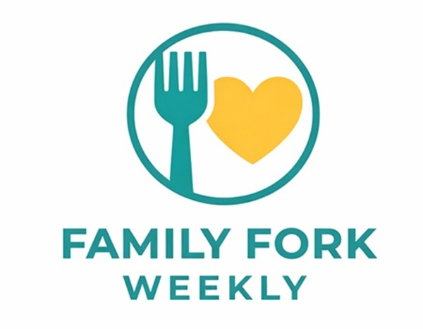

Contact Family Fork Weekly
Family Fork Weekly is designed to help families find simple meal planning ideas. Visitors can use this page to ask questions, share recipe ideas, or suggest topics for future meal planning content.

Contact Information
For questions or meal planning suggestions, send an email to: sammyk42086@gmail.com
Suggestions Welcome
Future updates to this site could include more recipe categories, printable grocery lists, budget meal ideas, and family-friendly dinner themes.
- Recipe suggestions
- Meal planning questions
- Budget-friendly grocery ideas
- Family dinner theme ideas